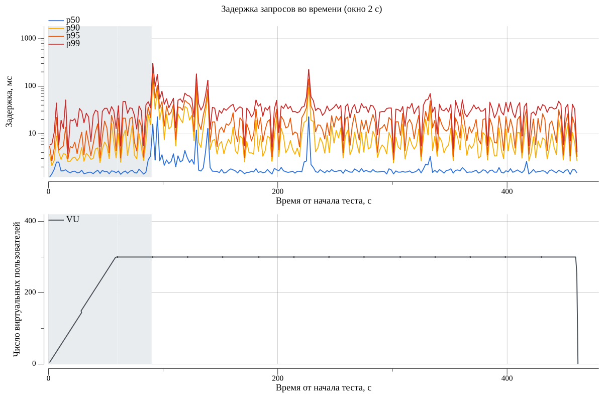
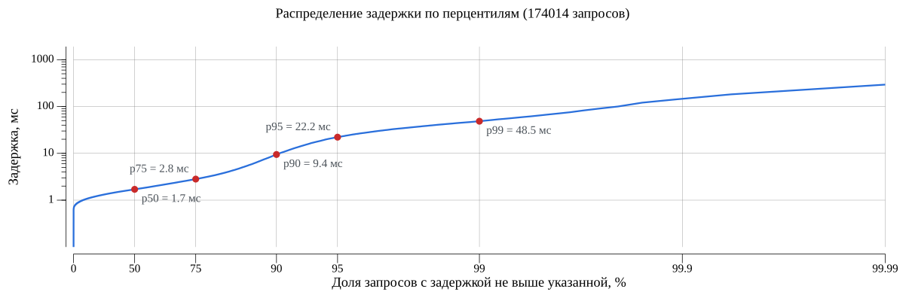
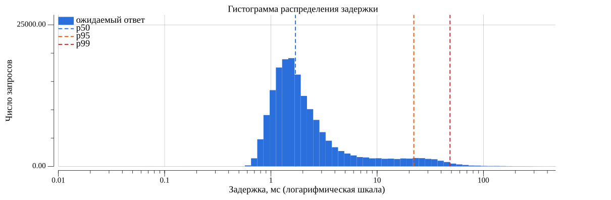
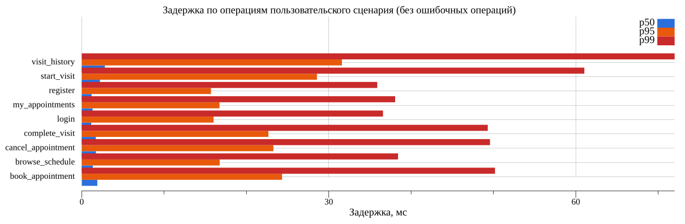
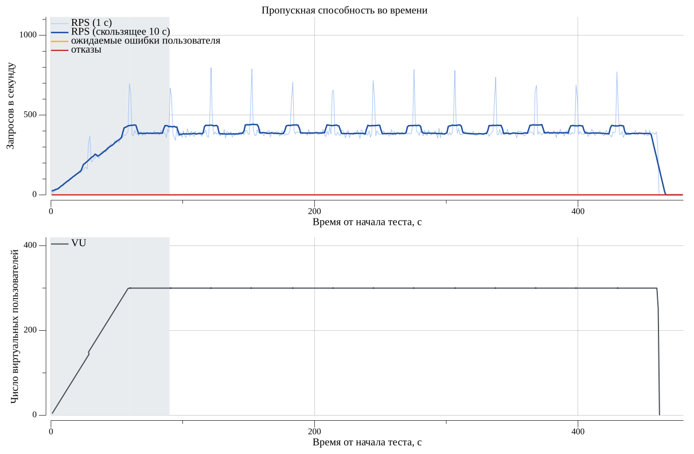
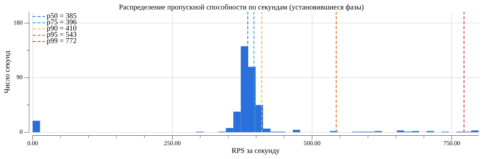
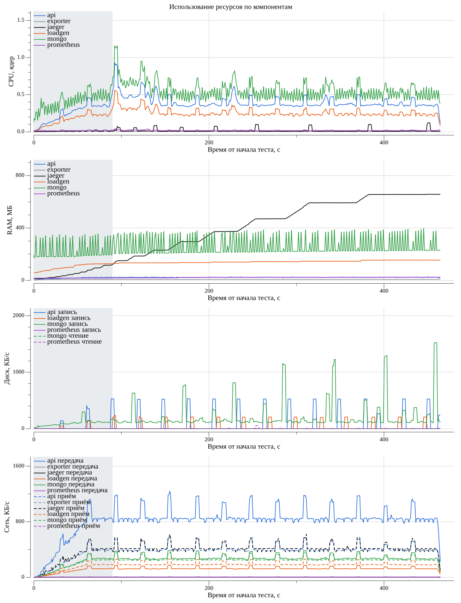

Фиксированная нагрузка
Запросов174014
RPS среднее / медиана363 / 383
p50 / p95 задержки1.70 / 22.2 мс
p99 задержки48.5 мс
Отказы0.00%
Ошибочные операции0.00%
Ошибочных операций: задано 0%, фактически 0.0%. Отказы 0.00%. Дрейф p95 между первым и последним отрезком ×0.40, RPS ×0.73. Тренд памяти: api 3.86 МБ/ч, exporter 1.12 МБ/ч, jaeger 5601 МБ/ч, loadgen 250 МБ/ч, mongo 39.6 МБ/ч, prometheus 50.3 МБ/ч.
Задержка
| Задержка, мс | count | min | mean | p50 | p75 | p90 | p95 | p99 | max |
|---|---|---|---|---|---|---|---|---|---|
| Все запросы | 174014 | -1418 | 4.72 | 1.70 | 2.82 | 9.45 | 22.2 | 48.5 | 473 |
| Корректные операции | 174014 | -1418 | 4.72 | 1.70 | 2.82 | 9.45 | 22.2 | 48.5 | 473 |
| Ошибочные операции | 0 | — | — | — | — | — | — | — | — |



Операции пользовательского сценария
| Операция | count | min | mean | p50 | p75 | p90 | p95 | p99 | max | Отказы | Ошибочные |
|---|---|---|---|---|---|---|---|---|---|---|---|
| book_appointment | 25252 | 0.07 | 5.11 | 1.89 | 2.90 | 10.7 | 24.3 | 50.2 | 291 | 0.00% | 0.00% |
| browse_schedule | 25273 | 0.31 | 3.47 | 1.34 | 1.91 | 5.67 | 16.8 | 38.4 | 186 | 0.00% | 0.00% |
| cancel_appointment | 7609 | 0.88 | 4.99 | 1.72 | 2.71 | 10.8 | 23.3 | 49.6 | 255 | 0.00% | 0.00% |
| complete_visit | 17539 | 0.84 | 4.87 | 1.71 | 2.69 | 10.2 | 22.7 | 49.3 | 304 | 0.00% | 0.00% |
| login | 25279 | 0.15 | 3.22 | 1.15 | 1.67 | 5.70 | 16.0 | 36.6 | 179 | 0.00% | 0.00% |
| my_appointments | 25210 | 0.07 | 3.43 | 1.31 | 1.87 | 5.75 | 16.7 | 38.1 | 217 | 0.00% | 0.00% |
| register | 5175 | 0.61 | 3.25 | 1.19 | 1.71 | 5.64 | 15.7 | 35.9 | 157 | 0.00% | 0.00% |
| start_visit | 17567 | 1.15 | 6.26 | 2.21 | 3.54 | 14.1 | 28.6 | 61.0 | 428 | 0.00% | 0.00% |
| visit_history | 25110 | -1418 | 7.42 | 2.81 | 4.70 | 16.2 | 31.6 | 72.0 | 473 | 0.00% | 0.00% |

Пропускная способность
| Показатель | count | min | mean | p50 | p75 | p90 | p95 | p99 | max |
|---|---|---|---|---|---|---|---|---|---|
| RPS за секунду | 480 | 0.00 | 363 | 383 | 394 | 407 | 475 | 745 | 797 |


Фазы нагрузки
| Участок | VU | RPS ср. | RPS p50 | RPS p5 | p50 мс | p95 мс | p99 мс | Отказы | CPU api | CPU mongo | RAM api, МБ | SLO |
|---|---|---|---|---|---|---|---|---|---|---|---|---|
| разгон | 300 | 212 | 220 | 26.7 | 1.58 | 8.81 | 28.8 | 0.00% | 0.20 | 0.37 | 14.9 | да |
| прогрев | 300 | 395 | 386 | 370 | 1.65 | 18.2 | 36.9 | 0.00% | 0.38 | 0.52 | 22.5 | да |
| стабильная нагрузка | 300 | 383 | 385 | 321 | 1.72 | 23.4 | 51.3 | 0.00% | 0.40 | 0.56 | 23.3 | да |
Динамика длительной нагрузки
| Участок | VU | RPS ср. | RPS p50 | RPS p5 | p50 мс | p95 мс | p99 мс | Отказы | CPU api | CPU mongo | RAM api, МБ | SLO |
|---|---|---|---|---|---|---|---|---|---|---|---|---|
| 1/5 | 300 | 405 | 384 | 361 | 2.25 | 41.7 | 95.8 | 0.00% | 0.49 | 0.67 | 23.2 | да |
| 2/5 | 300 | 407 | 387 | 365 | 1.67 | 21.1 | 47.0 | 0.00% | 0.39 | 0.54 | 23.0 | да |
| 3/5 | 300 | 399 | 385 | 371 | 1.61 | 16.3 | 34.9 | 0.00% | 0.38 | 0.52 | 23.5 | да |
| 4/5 | 300 | 408 | 389 | 369 | 1.66 | 16.9 | 39.0 | 0.00% | 0.39 | 0.54 | 23.3 | да |
| 5/5 | 300 | 297 | 380 | 0.00 | 1.63 | 16.7 | 36.8 | 0.00% | 0.36 | 0.52 | 23.5 | да |
| Компонент | Тренд памяти на установившемся участке, МБ/ч |
|---|---|
| api | 3.86 |
| exporter | 1.12 |
| jaeger | 5601 |
| loadgen | 250 |
| mongo | 39.6 |
| prometheus | 50.3 |
Использование ресурсов
| Компонент | Метрика | min | max | mean | median | p95 |
|---|---|---|---|---|---|---|
| api | CPU, ядер | 0.01 | 0.93 | 0.37 | 0.36 | 0.53 |
| api | Троттлинг CPU, с/с | 0.00 | 0.06 | 0.00 | 0.00 | 0.01 |
| api | Чтение с диска, КБ/с | 0.00 | 0.00 | 0.00 | 0.00 | 0.00 |
| api | Запись на диск, КБ/с | 0.00 | 531 | 67.1 | 0.00 | 527 |
| api | RAM (working set), МБ | 3.17 | 28.1 | 22.2 | 23.1 | 25.3 |
| api | Сеть, приём КБ/с | 0.26 | 567 | 380 | 392 | 533 |
| api | Сеть, передача КБ/с | 0.09 | 1241 | 813 | 844 | 1129 |
| api | Процессы и потоки | 7.00 | 16.0 | 8.91 | 9.00 | 9.00 |
| exporter | CPU, ядер | 0.00 | 0.01 | 0.01 | 0.00 | 0.01 |
| exporter | Троттлинг CPU, с/с | 0.00 | 0.00 | 0.00 | 0.00 | 0.00 |
| exporter | Чтение с диска, КБ/с | 0.00 | 0.00 | 0.00 | 0.00 | 0.00 |
| exporter | Запись на диск, КБ/с | 0.00 | 0.00 | 0.00 | 0.00 | 0.00 |
| exporter | RAM (working set), МБ | 3.09 | 8.09 | 7.53 | 7.64 | 8.04 |
| exporter | Сеть, приём КБ/с | 0.50 | 0.77 | 0.57 | 0.54 | 0.76 |
| exporter | Сеть, передача КБ/с | 2.83 | 6.53 | 4.84 | 4.63 | 6.46 |
| exporter | Процессы и потоки | 4.00 | 5.00 | 4.95 | 5.00 | 5.00 |
| jaeger | CPU, ядер | 0.00 | 0.12 | 0.01 | 0.01 | 0.07 |
| jaeger | Троттлинг CPU, с/с | 0.00 | 0.00 | 0.00 | 0.00 | 0.00 |
| jaeger | Чтение с диска, КБ/с | 0.00 | 0.00 | 0.00 | 0.00 | 0.00 |
| jaeger | Запись на диск, КБ/с | 0.00 | 0.00 | 0.00 | 0.00 | 0.00 |
| jaeger | RAM (working set), МБ | 13.4 | 658 | 380 | 374 | 656 |
| jaeger | Сеть, приём КБ/с | 0.00 | 620 | 394 | 414 | 565 |
| jaeger | Сеть, передача КБ/с | 0.00 | 1.56 | 0.96 | 0.98 | 1.35 |
| jaeger | Процессы и потоки | 7.00 | 8.00 | 7.88 | 8.00 | 8.00 |
| loadgen | CPU, ядер | 0.00 | 0.56 | 0.24 | 0.24 | 0.33 |
| loadgen | Троттлинг CPU, с/с | 0.00 | 0.00 | 0.00 | 0.00 | 0.00 |
| loadgen | Чтение с диска, КБ/с | 0.00 | 0.00 | 0.00 | 0.00 | 0.00 |
| loadgen | Запись на диск, КБ/с | 0.00 | 233 | 24.7 | 0.00 | 207 |
| loadgen | RAM (working set), МБ | 58.2 | 155 | 136 | 140 | 155 |
| loadgen | Сеть, приём КБ/с | 1.08 | 266 | 178 | 182 | 248 |
| loadgen | Сеть, передача КБ/с | 0.92 | 177 | 120 | 123 | 167 |
| loadgen | Процессы и потоки | 7.00 | 8.00 | 7.99 | 8.00 | 8.00 |
| mongo | CPU, ядер | 0.16 | 1.16 | 0.53 | 0.52 | 0.74 |
| mongo | Троттлинг CPU, с/с | 0.01 | 0.66 | 0.15 | 0.13 | 0.31 |
| mongo | Чтение с диска, КБ/с | 0.00 | 60.0 | 0.53 | 0.00 | 0.00 |
| mongo | Запись на диск, КБ/с | 8.29 | 1526 | 195 | 120 | 731 |
| mongo | RAM (working set), МБ | 173 | 397 | 254 | 224 | 376 |
| mongo | Сеть, приём КБ/с | 0.74 | 358 | 242 | 249 | 342 |
| mongo | Сеть, передача КБ/с | 0.49 | 389 | 259 | 268 | 364 |
| mongo | Процессы и потоки | 39.0 | 97.0 | 79.1 | 82.0 | 95.0 |
| prometheus | CPU, ядер | 0.01 | 0.05 | 0.02 | 0.02 | 0.03 |
| prometheus | Троттлинг CPU, с/с | 0.00 | 0.00 | 0.00 | 0.00 | 0.00 |
| prometheus | Чтение с диска, КБ/с | 0.00 | 54.0 | 0.46 | 0.00 | 0.00 |
| prometheus | Запись на диск, КБ/с | 0.00 | 7.00 | 0.69 | 0.00 | 5.00 |
| prometheus | RAM (working set), МБ | 17.0 | 27.2 | 21.7 | 23.2 | 23.9 |
| prometheus | Сеть, приём КБ/с | 3.31 | 6.53 | 4.85 | 4.63 | 6.47 |
| prometheus | Сеть, передача КБ/с | 0.54 | 0.80 | 0.57 | 0.54 | 0.76 |
| prometheus | Процессы и потоки | 8.00 | 14.0 | 8.06 | 8.00 | 8.00 |

Коды ответов
| Код | Запросов |
|---|---|
| 200 | 126020 |
| 201 | 47994 |
Окружение прогона
| Компонент | Логические CPU | Квота CPU | Резерв RAM, МБ | Лимит RAM, МБ | Образ | ID образа |
|---|---|---|---|---|---|---|
| api | 0,1 | 1 | 512 | 512 | vitaline-lab6-api:20261124-233226-stable-gyoy | 34bab9a88d5d |
| exporter | 6,7 | — | 64 | 64 | vitaline-lab4-exporter:1 | 5d8e679d55a3 |
| jaeger | 6,7 | — | 1536 | 1536 | jaegertracing/jaeger:2.11.0 | b585df1b6299 |
| loadgen | 4,5 | — | 2048 | 2048 | grafana/k6:1.3.0 | 3ddc8b1a33a2 |
| mongo | 2,3 | 1 | 1024 | 1024 | mongo:7 | 41e8195b2791 |
| prometheus | 6,7 | — | 768 | 768 | prom/prometheus:v3.5.0 | 63805ebb8d2b |